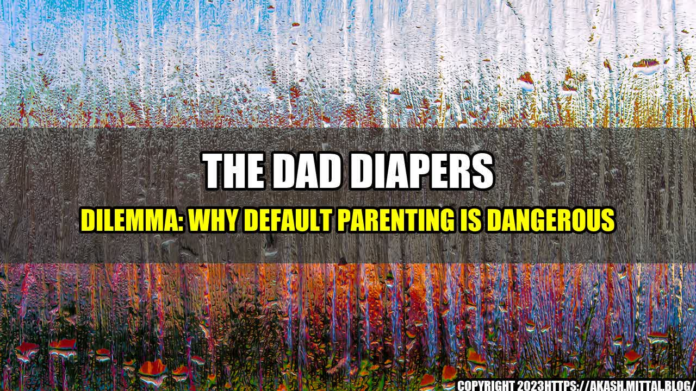

The Dad Diapers Dilemma: Why Default Parenting is Dangerous

It was a typical Saturday morning for John, a hardworking father of two young children. He had just finished changing his baby's diaper when his wife walked into the room and said, "I'm going to take a quick shower. Can you watch the kids for a bit?" Without even thinking, John replied, "Sure, no problem," and sat down on the couch with his phone.
At first, everything seemed fine. The baby was cooing and playing on the floor, and his older child was watching cartoons. But as the minutes ticked by, John started to feel overwhelmed. The baby started crying, and his older child kept asking for snacks. John didn't know what to do, and he couldn't get his wife to hear him over the sound of the shower.
Eventually, John's wife finished her shower and came out to find a frazzled and frustrated husband. It wasn't the first time this had happened, and it wouldn't be the last. John was falling victim to something known as default parenting, and it was taking a toll on his relationships, his mental health, and even his parenting abilities.
What is Default Parenting?
Default parenting is a term used to describe the tendency for one parent (usually the mother) to take on the majority of the childcare responsibilities, while the other parent (usually the father) takes a more passive role. This can happen in a variety of different ways, such as:
- Assuming that the mother knows best and deferring to her judgement
- Assuming that the mother is always available to solve problems and handle emergencies
- Assuming that the mother is solely responsible for scheduling and organizing the family's activities
- Assuming that the mother is the only one who can comfort a crying, upset, or sick child
While default parenting can occur in any family dynamic, it is especially prevalent in households where the mother is the primary caregiver and the father is the breadwinner. This can lead to a situation where the father feels disconnected from his children and the mother feels overburdened and exhausted.
The Dangers of Default Parenting
Default parenting is more than just an inconvenience or a source of frustration - it can actually be dangerous for both parents and children. Here are just a few examples:
- It can lead to a lack of bonding between fathers and children. Studies have shown that fathers who are actively involved in their children's lives are more likely to have positive relationships with them in the long run. Default parenting can prevent fathers from developing this bond.
- It can lead to a higher risk of postpartum depression in mothers. When mothers feel like they are responsible for all of the childcare tasks, they can quickly become overwhelmed and burnt out. This can lead to postpartum depression, which can have serious consequences for both mothers and their children.
- It can lead to a lack of problem-solving skills in fathers. When fathers are constantly deferring to their partners for solutions to parenting challenges, they don't develop the skills they need to handle those challenges themselves. This can leave them feeling helpless and frustrated when their partners aren't around.
- It can lead to a lack of respect and appreciation between partners. When one partner is doing the majority of the work, it's easy for the other partner to take that work for granted. This can lead to feelings of resentment and anger, which can damage the relationship.
The Benefits of Conscious Parenting
So, what's the solution to default parenting? Conscious parenting. This approach is characterized by a few key elements:
- Equal partnership between parents. Both parents should take an active role in all aspects of childcare, from changing diapers to making doctor appointments to planning playdates.
- Effective communication. Parents should talk openly and honestly about their feelings, needs, and priorities when it comes to parenting. This can help prevent misunderstandings and ensure that everyone's needs are being met.
- Collaboration. Parents should work together to find solutions to parenting challenges, rather than relying on one partner to always have the answer.
- Self-awareness. Each parent should be aware of their individual strengths and weaknesses, and should be willing to ask for help when needed.
Conscious parenting isn't always easy, but it can have many positive benefits, including:
- Stronger relationships between parents and children. When both parents are actively involved in their children's lives, children feel more supported and loved.
- Lower risk of postpartum depression in mothers. When both parents are sharing the workload, mothers are less likely to feel overwhelmed and burnt out.
- Improved problem-solving skills in fathers. When fathers are actively engaged in parenting, they develop the skills they need to handle challenges on their own.
- Stronger relationships between partners. When both partners feel like they are contributing equally to the family, feelings of resentment and anger are less likely to occur.
Practical Tips for Conscious Parenting
If you're looking to transition from default parenting to conscious parenting, here are a few practical tips to get you started:
- Share the load. Decide on a fair division of labor when it comes to childcare tasks, and make sure that both parents are fulfilling their responsibilities.
- Communicate effectively. Set aside time each day to talk about your parenting needs, concerns, and successes.
- Collaborate. Work together to find solutions to common parenting challenges, and be willing to compromise when necessary.
- Be aware of your own strengths and weaknesses. If you're struggling with a particular aspect of parenting, don't be afraid to ask for help or advice.
Final Thoughts
The dad diapers dilemma is a real problem for many families, but it doesn't have to be. By embracing conscious parenting and working together as equal partners, parents can create healthier, happier, and more connected families. So, the next time your partner asks you to watch the kids, take it as an opportunity to bond with your children and contribute to your family's well-being.
Curated by Team Akash.Mittal.Blog
Share on Twitter Share on LinkedIn